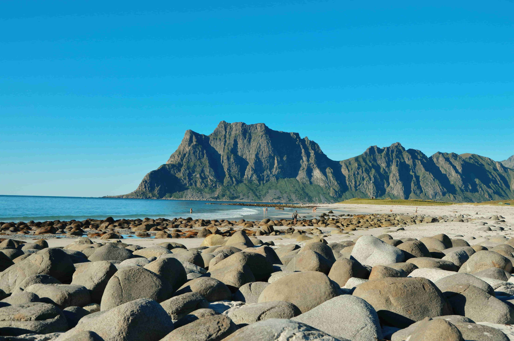

FAMOUS BEACHES
OF NORTH
Discover the beauty of the northern coast — where volcanic
landscapes, black sand beaches,
Arctic scenery and dramatic
mountains create unforgettable coastal experiences.
VISITED
WONDERFULL
NICE BEACHES
OF NORTH
DESTINATIONS
Reynisfjara Beach
Reynisfjara is one of Iceland's most famous black-sand beaches. It is known for volcanic sand, dramatic basalt columns, powerful Atlantic waves and striking sea stacks.

01 — REYNISFJARA
BLACK SHORES AHEAD.
Where volcanic black sand meets the wild Atlantic, surrounded by towering basalt columns and restless waves.

REYNISFJARA BEACH
Vík, Iceland

WILD ATLANTIC
South Iceland

VOLCANIC SHORE
South Iceland

ATLANTIC WAVES
Vík, Iceland

THE BLACK COAST
Reynisfjara, Iceland

02 — UTTAKLEIV
WHERE EARTH MEETS SEA.
A quiet Arctic shore where pale sands meet dark rocks, turquoise water and dramatic mountains rise beyond the sea.

UTTAKLEIV BEACH
Lofoten, Norway

THE NORTHERN SHORE
Lofoten, Norway

ARCTIC COAST
Vestvågøy, Norway

BETWEEN MOUNTAINS
Lofoten Islands

WHERE LAND ENDS
Uttakleiv, Norway
WHY TOURISTS
VISIT
More than just beautiful beaches — these destinations offer dramatic scenery, peaceful Arctic landscapes, volcanic formations and unforgettable natural experiences.
What makes Reynisfjara Beach special?
Reynisfjara is famous for its unique volcanic landscape, black sand, basalt cliffs, powerful Atlantic waves and dramatic sea stacks.
- Unique black sand created by volcanic activity.
- Famous basalt column formations at the cliffs.
- Dramatic Reynisdrangar sea stacks rising from the ocean.
- Wild coastal scenery and powerful Atlantic waves.
- Excellent location for landscape photography and sightseeing.
Walk. Explore.
Capture.
Beach walking, sightseeing, photography and enjoying the dramatic coastal scenery.
Visitors Iceland ki unique volcanic landscape, black sand, basalt cliffs aur famous sea stacks dekhne ke liye aate hain.
Reynisfjara is well known for its distinctive black volcanic sand and dramatic coastal formations.
What makes Uttakleiv Beach special?
Uttakleiv Beach is a beautiful Arctic destination surrounded by the dramatic mountains of the Lofoten Islands. Its clear waters, pale sand and rocky shoreline create a distinctive Arctic landscape.
- Clear turquoise-blue water and pale sandy shoreline.
- Dramatic Lofoten mountains surrounding the beach.
- Large smooth rocks create a distinctive Arctic landscape.
- Beautiful views of the Norwegian Sea.
- Excellent destination for landscape and nature photography.
Walk. Hike.
Explore.
Relaxing, photography, beach walks, hiking nearby trails and, in suitable seasons, viewing the Northern Lights.
Visitors Lofoten ki peaceful Arctic scenery, mountains, beaches aur unique natural landscapes experience karne ke liye aate hain.
The Lofoten mountains and Norwegian Sea create a unique Arctic coastal setting around Uttakleiv Beach.
Beach Comparison
| FEATURE | Reynisfjara | Uttakleiv |
|---|---|---|
| Country | Iceland | Norway |
| Location | Near Vík í Mýrdal | Vestvågøy, Lofoten Islands |
| Main Attraction | Black sand & basalt columns | Mountains, rocks & clear water |
| Environment | Volcanic and dramatic | Peaceful Arctic landscape |
| Popular Activities | Photography, sightseeing, walking | Photography, hiking, beach walks |
| Ideal For | Adventure seekers & photographers | Nature lovers & photographers |